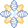
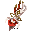
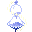
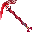
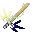
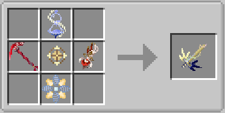

GILE DOCUMENTATION
Legendary Weapons
The four pillars of reality—Life, Space, Time, and Death. These incredibly rare drops from the Wish Table possess reality-bending mechanics.
Unlike Elemental Weapons, the four Legendary weapons boast not only Passive, On-Hit, and Active (V) abilities, but also a dedicated Utility function bound to Right-Click.
Tome of Naberius Aspect: Life

- Passive: Doubles max HP.
- On-Hit: Only visuals, as considered more of a support tool.
- Active (V): AoE healing. Undead harming.
- Utility (Right-Click): Aimed or self healing.
Palm of Asmoday Aspect: Space

- Passive: None.
- On-Hit: Teleports ennemy randomly, confusing it.
- Active (V): Teleports every annemy in a radius 10 in the direction of caster's view.
- Utility (Right-Click): Teleports player on a safe position untill 30 blocks away, dealing some damage and applying side effects.
Hourglass of Istaroth Aspect: Time

- Passive: None.
- On-Hit: Slows ennemies' time.
- Active (V): AoE slowness to ennemies and swiftness to the caster.
- Utility (Right-Click): Acts like an AoE bonemeal on an 5*5*2 area.
Scythe of Ronova Aspect: Death

- Passive: Resistance I.
- On-Hit: After dealing weapon's damage, takes the leftover ennemy hp and deals half of this ammount of damage to the caster.
- Active (V): Heals the undead, while damages, poisons and withers any other ennemy.
- Utility (Right-Click): Transforms to a spear, but on hit can be used as so too.
The Primordial Weapon
The ultimate endgame armament. By unifying all four Legendary Weapons together with a Cogwork Core, you can forge the singular Blade of Creation. It combines the legendary power of every aspect into a single weapon.

Craft it from every of the four Legendary Wepons around a Cogwork Core. Provides one ability and passive, as every elemental weapon, one utility, as every legendary weapon, and one more special divine ability on B key.
